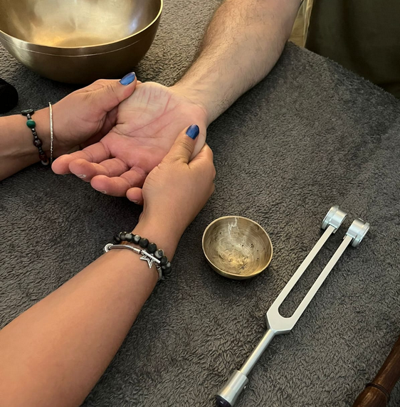
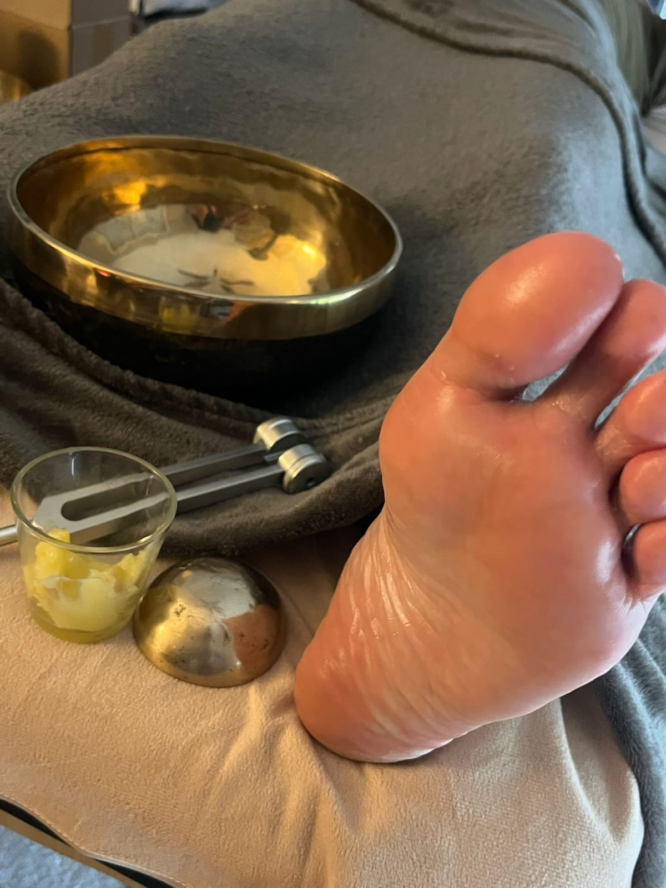
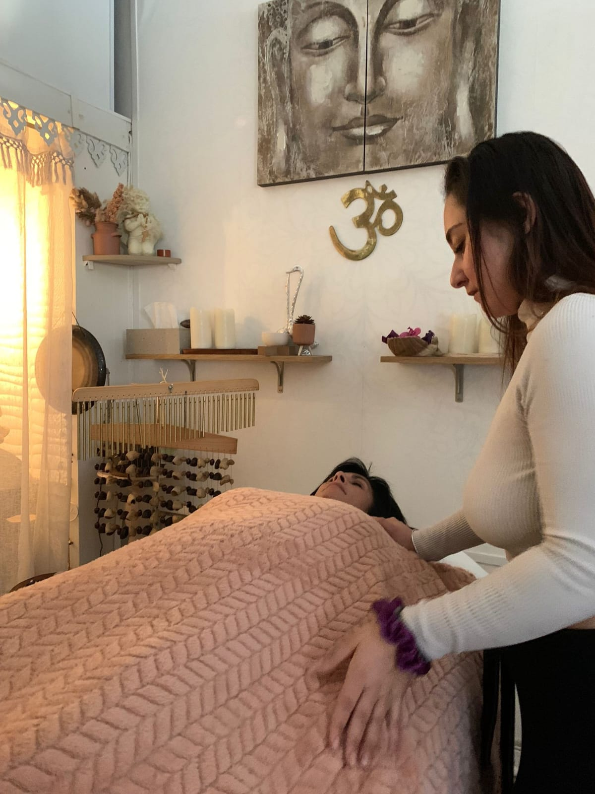
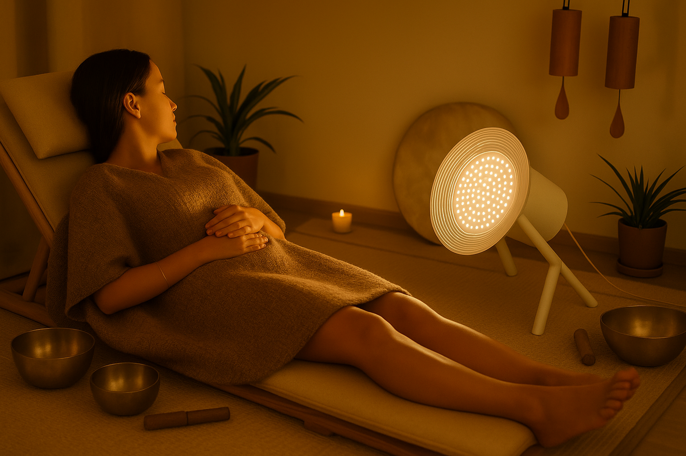
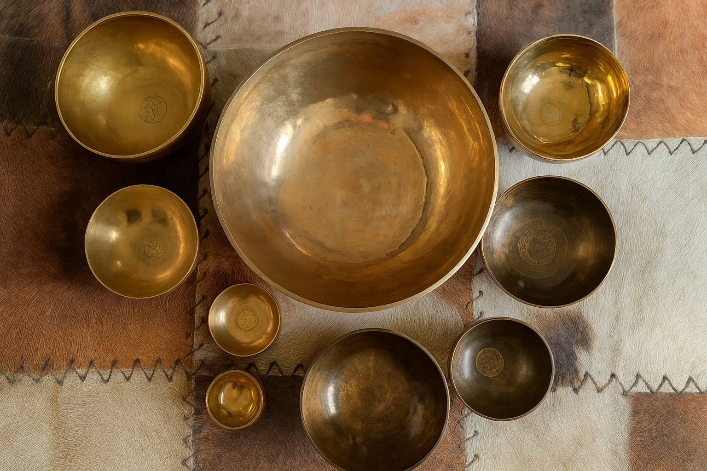
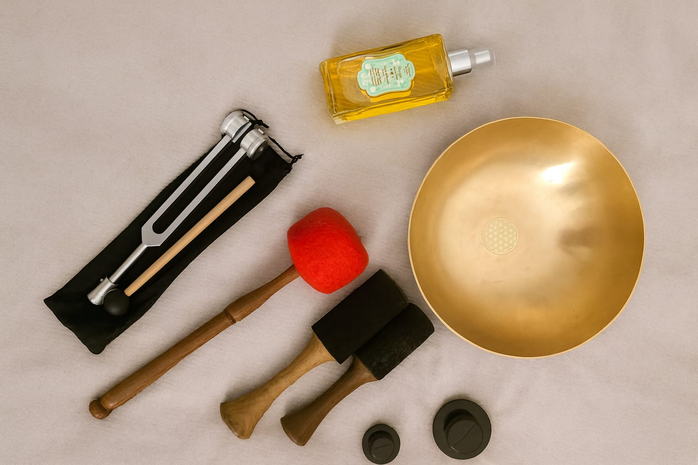

Mes prestations
Caresse Vibratoire
Un soin dédié à nos mains, ces messagères précieuses du quotidien.

Par l’alliance de la réflexologie palmaire, du massage et des vibrations sonores, ce rituel invite au lâcher-prise, libère les tensions et dénoue les nœuds accumulés. Il favorise le bien-être global, la détente profonde et redonne légèreté et fluidité à nos mains, en résonance avec tout notre être.
Ancrage & Racines
Un rituel d’ancrage qui libère les tensions, nourrit les pieds et réharmonise tout l’être.

Le massage des pieds au bol Kansu, rituel ancestral qui apaise les tensions profondes, stimule l’énergie vitale et favorise un ancrage serein. Le contact du métal allié aux mouvements doux libère les nœuds intérieurs et rétablit l’équilibre. Un protocole d’harmonisation qui relie le haut et le bas, l’air et la terre, pour retrouver légèreté, stabilité et bien-être global.
Soin LaHoChi
Un soin énergétique doux et puissant...

Ce soin aide à relâcher les tensions, à calmer le mental et à soutenir le corps dans son processus naturel d’équilibre. Il agit comme une mise au repos intérieure : les énergies se réorganisent, la respiration s’apaise et une sensation de clarté et de légèreté peut émerger.
Ondes de Rêves
Une expérience unique entre lumière et sons favorisant le lâcher-prise pour stimuler à la fois le calme intérieur et la créativité.

En fermant les yeux face à la douce pulsation lumineuse, le cerveau entre naturellement dans des états de relaxation profonde, semblables à ceux de la méditation ou du rêve éveillé. Associée aux vibrations sonores, elle invite à un lâcher-prise total, stimule l’imaginaire et ouvre l’accès à un espace intérieur de calme. Un voyage enivrant, entre rêve et conscience, pour explorer de nouvelles dimensions de soi.
Relaxation sonore
Une immersion sonore apaisante qui rééquilibre l’énergie et invite à un profond relâchement.

Un voyage au cœur des vibrations. Les sons cristallins et tibétains des bols, les battements profonds du tambour et bien d’autres instruments... Cette immersion sonore apaise le mental, rééquilibre l’énergie et installe une profonde sérénité tout en favorisant l'auto-guérison. Un moment pour se recentrer, se ressourcer et retrouver l’harmonie intérieure.
Massage vibratoire Signature
Un moment unique où le corps devient résonance, favorisant bien-être et sérénité.

Massage doux et intuitif alliant les bienfaits des fréquences sonore et mes techniques de massages. Un soin créé sur mesure avec le consultant en fonction de ses besoins/douleurs.